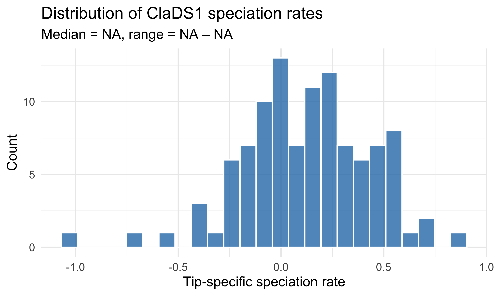
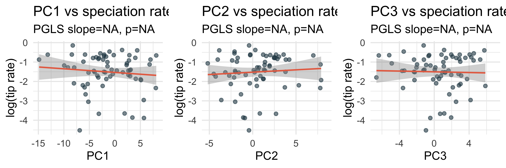
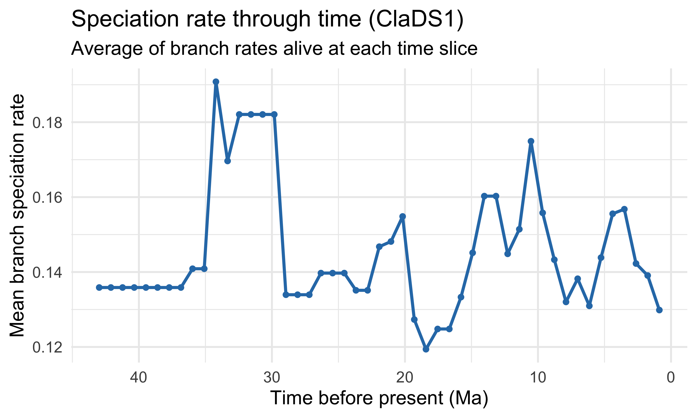

Which Chaetodontidae lineages are diversifying fastest?
Note
Pre-computed results. The ClaDS1 MCMC was run on the Mac mini with iterations = 5000 (~20 min). The result object and tip rates CSV are cached in the bundle. This recipe loads them directly — no MCMC runs during rendering.
Parameter guidance:
iterations = 5000 is sufficient for a poster-quality result on trees up to ~150 tips (~10–20 min)
iterations = 10000 gives smoother posteriors if you want publication-quality estimates (~30–60 min)
iterations = 50000 is excessive for most student projects and can take 12+ hours — avoid this
sample_fraction = 0.8 accounts for incomplete taxon sampling (adjust if your clade coverage differs)
Tip
Advanced recipe. Fits ClaDS1 (Cladogenetic Diversification rate Shift) to the Chaetodontidae chronogram using RPANDA. Produces branch-specific speciation rates, a tree colored by rate, and a rate-vs-time scatter.
tree <-read.tree(file.path(BUNDLE, "chaetodontidae-tree.tre"))tree <-ladderize(tree)if (!is.ultrametric(tree)) { tree <-force.ultrametric(tree, method ="extend")}cat(sprintf("Tree: %d tips, crown age %.1f Ma\n",length(tree$tip.label),max(node.depth.edgelength(tree))))
Tree: 109 tips, crown age 43.0 Ma
Fit ClaDS1
library(RPANDA)set.seed(2026)clads_result <-fit_ClaDS(tree, nCPU =1,sample_fraction =0.8,iterations =5000) # 5K sufficient for poster; 10K for publication# Save results to avoid re-runningsaveRDS(clads_result, file.path(BUNDLE, "clads1_result.rds"))
Load saved results (if available)
# Load the pre-computed ClaDS result (MCMC ran on Mac mini with iterations=5000)clads_result <-readRDS(file.path(BUNDLE, "clads1_result.rds"))cat("ClaDS result loaded.\n")
ClaDS result loaded.
Check MCMC convergence
Warning
ESS matters. Effective sample size (ESS) tells you how many independent draws the MCMC actually produced. ESS < 100 means the chain has not explored the posterior well. If your ESS values are low, increase iterations (e.g., 10000 or 20000) and re-run.
if (any(ess_table$ESS <100)) {cat("\n*** WARNING: ESS < 100 for some parameters. Consider re-running with\n")cat(" iterations = 10000 or 20000 for more reliable estimates. ***\n")}
*** WARNING: ESS < 100 for some parameters. Consider re-running with
iterations = 10000 or 20000 for more reliable estimates. ***
Load tip rates
The tip rates were extracted from the MCMC posterior (posterior mean after 50% burn-in). getMAPS_ClaDS() can be unstable with some RPANDA versions, so we ship the pre-computed CSV.
ggplot(tip_rates, aes(x = tip_rate)) +geom_histogram(bins =25, fill ="#2c7bb6", color ="white", alpha =0.8) +geom_vline(xintercept =median(tip_rates$tip_rate),color ="#d7191c", linewidth =1.2, linetype ="dashed") +labs(x ="Tip-specific speciation rate", y ="Count",title ="Distribution of ClaDS1 speciation rates",subtitle =sprintf("Median = %.3f, range = %.3f \u2013 %.3f",median(tip_rates$tip_rate),min(tip_rates$tip_rate),max(tip_rates$tip_rate))) +theme_minimal(base_size =20)
Warning: Removed 4 rows containing non-finite outside the scale range
(`stat_bin()`).
Warning: Removed 1 row containing missing values or values outside the scale range
(`geom_vline()`).

Distribution of ClaDS1 tip-specific speciation rates across Chaetodontidae.
Warning: Removed 4 rows containing non-finite outside the scale range
(`stat_bin()`).
Warning: Removed 1 row containing missing values or values outside the scale range
(`geom_vline()`).
Warning in grid.Call.graphics(C_text, as.graphicsAnnot(x$label), x$x, x$y, :
for 'Median = NA, range = NA – NA' in 'mbcsToSbcs': - substituted for –
(U+2013)
# Subset tree to shared speciesshared_rp <-intersect(rate_pca$species, tree$tip.label)rate_pca <- rate_pca[rate_pca$species %in% shared_rp, ]tree_rp <-keep.tip(tree, shared_rp)if (!is.ultrametric(tree_rp)) { tree_rp <-force.ultrametric(tree_rp, method ="extend")}rate_pca <- rate_pca[match(tree_rp$tip.label, rate_pca$species), ]rownames(rate_pca) <- rate_pca$species# PGLS for each PC axispgls_results <-list()for (pc inc("PC1", "PC2", "PC3")) { frm <-as.formula(paste("log_rate ~", pc)) fit <-tryCatch(gls(frm, data = rate_pca,correlation =corBrownian(phy = tree_rp)),error =function(e) NULL )if (!is.null(fit)) { s <-summary(fit) pgls_results[[pc]] <-list(slope =round(coef(fit)[2], 4),pval =round(s$tTable[2, 4], 4) ) } else { pgls_results[[pc]] <-list(slope =NA, pval =NA) }}# Build 3-panel figureplots <-list()for (pc inc("PC1", "PC2", "PC3")) { pg <- pgls_results[[pc]] label <-sprintf("PGLS slope=%.3f, p=%.3f", pg$slope, pg$pval) p <-ggplot(rate_pca, aes_string(x = pc, y ="log_rate")) +geom_point(size =2.5, alpha =0.6, color ="#264653") +geom_smooth(method ="lm", color ="#e76f51", linewidth =1.2, se =TRUE) +labs(x = pc, y ="log(tip rate)",title =paste(pc, "vs speciation rate"),subtitle = label) +theme_minimal(base_size =20) plots[[pc]] <- p}
Warning: `aes_string()` was deprecated in ggplot2 3.0.0.
ℹ Please use tidy evaluation idioms with `aes()`.
ℹ See also `vignette("ggplot2-in-packages")` for more information.
gridExtra::grid.arrange(grobs = plots, ncol =3)
`geom_smooth()` using formula = 'y ~ x'
Warning: Removed 42 rows containing non-finite outside the scale range
(`stat_smooth()`).
Warning: Removed 42 rows containing missing values or values outside the scale range
(`geom_point()`).
`geom_smooth()` using formula = 'y ~ x'
Warning: Removed 42 rows containing non-finite outside the scale range
(`stat_smooth()`).
Removed 42 rows containing missing values or values outside the scale range
(`geom_point()`).
`geom_smooth()` using formula = 'y ~ x'
Warning: Removed 42 rows containing non-finite outside the scale range
(`stat_smooth()`).
Removed 42 rows containing missing values or values outside the scale range
(`geom_point()`).

Tip-specific speciation rate (log) vs phyloPCA scores (PC1–PC3) with PGLS regression lines.
`geom_smooth()` using formula = 'y ~ x'
Warning: Removed 42 rows containing non-finite outside the scale range
(`stat_smooth()`).
Warning: Removed 42 rows containing missing values or values outside the scale range
(`geom_point()`).
`geom_smooth()` using formula = 'y ~ x'
Warning: Removed 42 rows containing non-finite outside the scale range
(`stat_smooth()`).
Removed 42 rows containing missing values or values outside the scale range
(`geom_point()`).
`geom_smooth()` using formula = 'y ~ x'
Warning: Removed 42 rows containing non-finite outside the scale range
(`stat_smooth()`).
Removed 42 rows containing missing values or values outside the scale range
(`geom_point()`).
Compute the mean speciation rate at each time slice by averaging the rates of all branches alive at that time. This shows whether diversification has been accelerating, decelerating, or approximately constant.
# Build branch-rate vectorn_tips <-length(tree$tip.label)rate_vec <-setNames(tip_rates$tip_rate, tip_rates$species)# For each edge, assign rate: tip edges use tip rate; internal edges use mean of descendant tip ratesedge_rate_vec <-sapply(seq_len(nrow(tree$edge)), function(e) { child <- tree$edge[e, 2]if (child <= n_tips) { rate_vec[tree$tip.label[child]] } else {# Get all descendant tips of this internal node desc <-getDescendants(tree, child) desc_tips <- desc[desc <= n_tips]mean(rate_vec[tree$tip.label[desc_tips]], na.rm =TRUE) }})# Get node heights (start and end time of each edge)nh <-nodeHeights(tree)crown_age <-max(nh)# Create time slicesn_slices <-50time_pts <-seq(0, crown_age, length.out = n_slices)mean_rate_at_t <-sapply(time_pts, function(t) { alive <-which(nh[, 1] <= t & nh[, 2] > t)if (length(alive) ==0) return(NA)mean(edge_rate_vec[alive], na.rm =TRUE)})rtt_df <-data.frame(time_before_present = crown_age - time_pts,mean_rate = mean_rate_at_t)rtt_df <- rtt_df[!is.na(rtt_df$mean_rate), ]ggplot(rtt_df, aes(x = time_before_present, y = mean_rate)) +geom_line(color ="#2c7bb6", linewidth =1.5) +geom_point(color ="#2c7bb6", size =2) +scale_x_reverse() +labs(x ="Time before present (Ma)", y ="Mean branch speciation rate",title ="Speciation rate through time (ClaDS1)",subtitle ="Average of branch rates alive at each time slice") +theme_minimal(base_size =20)

Mean branch-specific speciation rate through time. Time runs from crown age (left) to present (right).